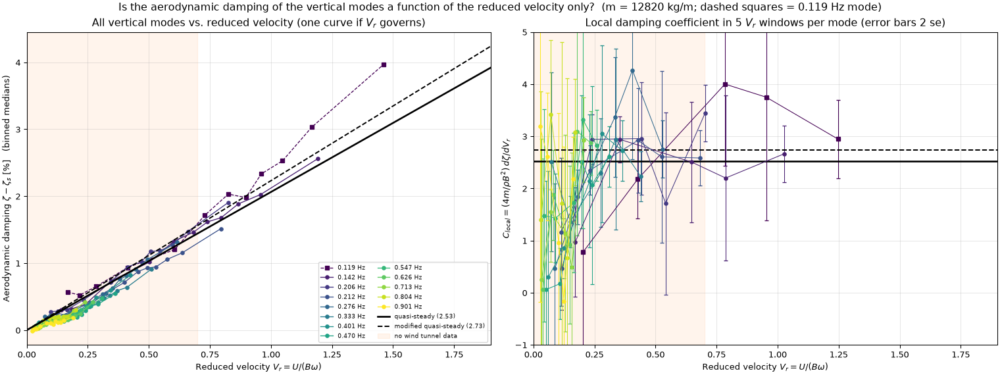
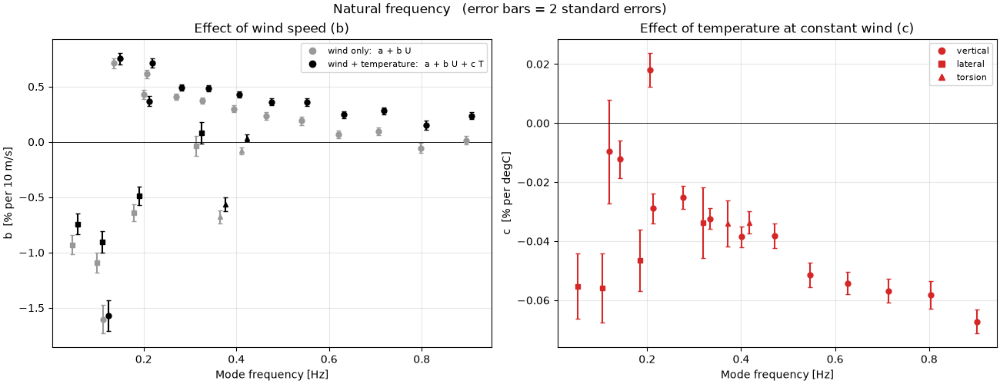
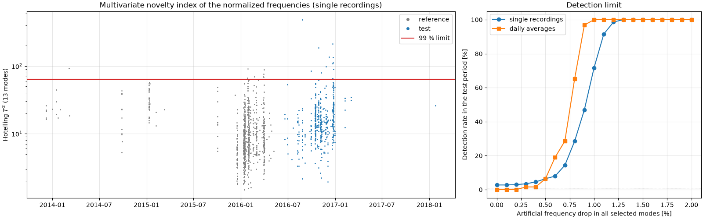
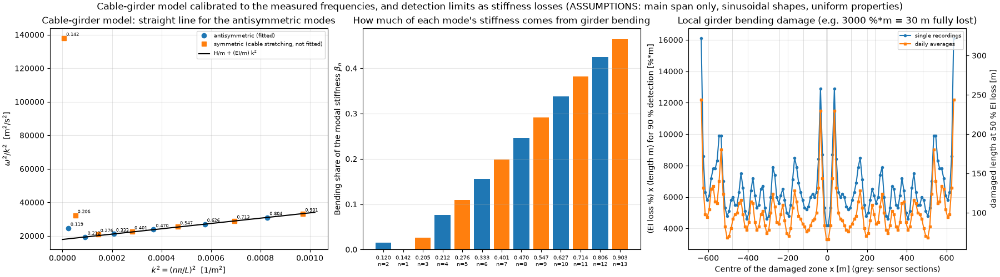
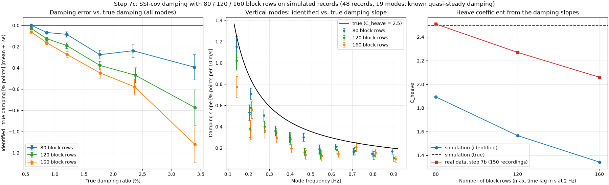

Operational Modal Analysis of the Hardanger Bridge
Modal identification of the Hardanger Bridge (1310 m main span) from 1,485 half-hour acceleration recordings, 2013–2018.
The bridge has 20 accelerometers and 9 anemometers. I wrote the analysis in Python: covariance-driven stochastic subspace identification (SSI-cov), automatic mode picking by clustering of stable poles, mode tracking between recordings, regression of frequency and damping on wind speed and temperature, and novelty detection on the normalized frequencies. The methods are tested on simulated data with known modal properties.
- About 25 modes per recording between 0.05 and 0.95 Hz, picked without manual input. Frequencies are within −1.2 to +0.3 % of those reported by Petersen & Øiseth (2017).
- Frequencies drop 0.02–0.07 % per °C. Vertical frequencies increase with U², which matches the static wind load on the cables.
- Plotted against reduced velocity, the damping of the 13 vertical modes falls on one curve close to quasi-steady theory with the wind-tunnel coefficients.
- With wind and temperature removed, a Hotelling T² chart detects a 1.1 % drop in all frequencies in 90 % of single recordings. That corresponds to about 3.5 % loss of cable stiffness. Local damage to the girder is much harder to detect.
- SSI-cov underestimates damping above about 2 % on 30-minute records. I estimated this bias for each recording with a simulated copy of it and corrected for it.
Tools

Figures





Data: Wind and Acceleration Data from the Hardanger Bridge, NTNU, DOI 10.21400/5ng8980s, CC-BY 4.0.